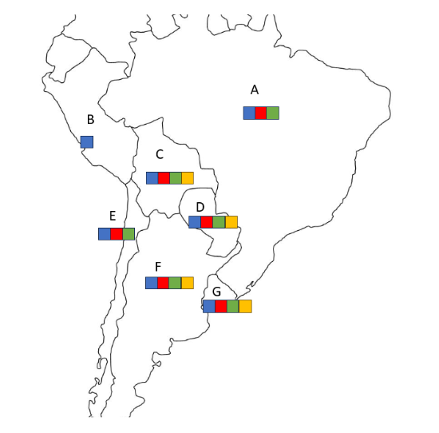

Map coloring is a classic Constraint Satisfaction Problem (CSP) where we need to assign colors to regions of a map such that no two adjacent regions share the same color. This problem demonstrates fundamental concepts in AI search algorithms and constraint satisfaction techniques. The challenge lies in efficiently exploring the solution space while maintaining consistency constraints.
⚠️ Key Concepts:
• Minimum Remaining Values (MRV): Choose the variable with the fewest legal values (most constrained variable)
• Degree Heuristic: Break ties by selecting the variable involved in the most constraints with unassigned variables
• Time Complexity: O(d^n) worst case, but heuristics significantly reduce average case
• Space Complexity: O(n) for the recursion stack, where n is the number of variables
Why Use Variable Selection Heuristics?
The MRV heuristic helps us fail fast by immediately detecting dead ends when a variable has no legal values. The degree heuristic reduces future branching by selecting variables that constrain the most other variables. Together, they dramatically improve search efficiency by reducing the branching factor early in the search tree.
1️⃣ MRV (Most Constrained Variable)
Idea: Choose the variable with the smallest domain size
Benefit: Reduces branching factor and detects failures early
When to use: Primary heuristic for variable selection
2️⃣ Degree Heuristic (Most Constraining)
Idea: Choose the variable involved in most constraints with unassigned variables
Benefit: Reduces future domains of other variables
When to use: As a tie-breaker when MRV produces ties
📈 Performance Analysis
Without Heuristics: Random variable selection leads to high branching factors throughout the search tree.
With MRV + Degree: Low branching factor early on, and forward checking further reduces domains as we progress.
Key Insight: MRV is generally the stronger heuristic, so we prioritize it and use Degree for tie-breaking.
Algorithm Overview:
1. Variable Selection: Use MRV to select the variable with fewest legal values
2. Tie Breaking: If multiple variables have the same MRV, use Degree heuristic
3. Value Assignment: Try each value in the selected variable's domain
4. Forward Checking: Update domains of neighboring variables to maintain arc consistency
5. Recursion: Recursively solve remaining variables
6. Backtracking: If no solution exists, backtrack and try next value
Step-by-Step Algorithm Execution
❗Tip: Try each step on your own. Click next to confirm your answer and see why the choice is the correct one.
Step 1 of 10
Step 1: Initial State

Upload Step 1 image
Step 1:
Algorithm Implementation
Python Implementation
Here's how we can implement the CSP map coloring algorithm with MRV and Degree heuristics:
def mrv_degree_csp_solver(regions, colors, neighbors):
# Initialize domains (each region can use any color initially)
domains = {region: colors.copy() for region in regions}
assignment = {}
def is_consistent(region, color):
return all(assignment.get(n) != color for n in neighbors[region])
def forward_check(region, color):
removed = {}
for n in neighbors[region]:
if n not in assignment and color in domains[n]:
domains[n].remove(color)
removed.setdefault(n, []).append(color)
return removed
def restore(removed):
for r, colors in removed.items():
domains[r].extend(colors)
def select_variable(regions, domains, neighbors):
unassigned = [r for r in regions if r not in assignment]
if not unassigned:
return None
# MRV: Find minimum remaining values
min_values = min(len(domains[r]) for r in unassigned)
mrv_vars = [r for r in unassigned if len(domains[r]) == min_values]
# Degree heuristic: Break ties by most constraining variable
if len(mrv_vars) > 1:
max_degree = max(sum(1 for n in neighbors[r] if n not in assignment)
for r in mrv_vars)
return next(r for r in mrv_vars
if sum(1 for n in neighbors[r] if n not in assignment) == max_degree)
return mrv_vars[0]
def backtrack():
if len(assignment) == len(regions):
return assignment
var = select_variable(regions, domains, neighbors)
for color in domains[var][:]:
if is_consistent(var, color):
assignment[var] = color
removed = forward_check(var, color)
result = backtrack()
if result:
return result
del assignment[var]
restore(removed)
return None
return backtrack()
Key Implementation Points:
• MRV Implementation: Count remaining legal values in each variable's domain
• Degree Heuristic: Count constraints with unassigned variables only
• Forward Checking: Maintain arc consistency by removing conflicting values
• Backtracking: Restore domain states when backtracking occurs
• Early Failure Detection: Stop immediately if any domain becomes empty
❗Performance Tip: The combination of MRV and Degree heuristics with forward checking typically reduces the search space by orders of magnitude compared to naive backtracking!
🐍 Python CSP Map Coloring Visualizer
Your Turn: Create new CSP Map Coloring Problems and see how MRV and Degree Heuristics can solve unique new problems.
📋 Prerequisites
Visual Studio Code or another IDE
Python3
matplotlib library: pip install matplotlib
tkinter (usually included with python)
numpy library: pip install numpy
How to run the Visualizer:
1Download the visualizer if you have not already: Save the Python script as pythonvisualizer.py
2Install any missing dependencies:
pip install matplotlib numpy tkinter
3Start a python virtual enviornment
source ~/myenv/bin/activate
4Run the visualizer:
python pythonvisualizer.py
5Create new Map Coloring Problems: Add new regions, create edges between nodes, restrict color domains, and even change the order of the two heuristics. Try to solve the problems before having the Autocolor give the answer!
🌐 Network Frequency Assignment Problems
Now apply what you've learned about Map Coloring using MRV and Degree Heuristics to solve real-world assignment problems.
Background: In networking, seperate wirless networks must use different frequencies when in close proximity to avoid interference with one another. This extends to countries who must be assigned different frequency bands (1-6 MHz) to avoid interference with neighbors. Your job is to ensure there is no interference by assigning each country a seperate frequency band from any neighbor. HOWEVER, to ensure absolutely no infererence, we will also avoid assigning neighbors of neighboring countries the same frequencies. Ignore any unlabelled landmasses and oceans.
Problem Set
Problem 1 of 3
Upload Problem 1 Map Here
Frequency Assignment
Objective: Assign frequency bands (1-6 MHz) to each country such that:
No two neighboring countries use the same frequency
No two countries that are neighbors of neighbors use the same frequency
Use MRV Heuristics with Degree Heuristics as a tie-breaker